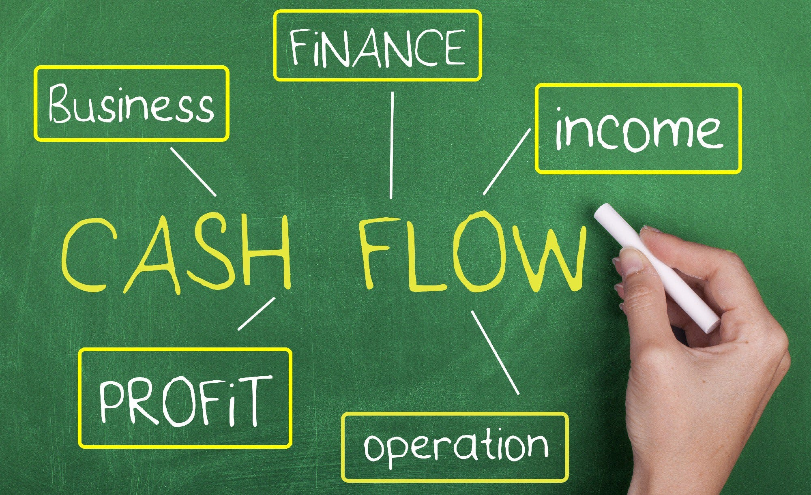

Cash-flow-producing concepts
The challenge of uncertainty that comes with developing a tech-enabled product idea into a business


Continuous Ideation
As a product manager in charge of product innovation your core goal and the one of your team is to continuously ideate and to challenge yourself to find new and inventive ways to acquire information about young but very competitive industry segments. Ideation for a product manager is a never-ending process that should output relevant tech-enabled product ideas that could potentially be cash-flow-producing tech-enabled products.
Turning ideas into testable concepts
Once a tech-enabled product idea emerges, the next step is to fastly build a testable product the emulate the idea in front of the target audience using the least amount of resources possible because at this stage nothing is sure because of the lack of knowledge about what really matters. In this stage, the level of uncertainty is big, and spending a huge amount of money is risky.
Testing concepts for marketability
it is not only about building tech-enabled products for the sake of building but it is for these tech-enabled products to have a reachable market. The products should not only be tech enable they also must be market-enabled. it is this event that the lean startup framework calls product-market fit. What you are trying, when you want to ship successful products, is to find an intersection between a set of products (or product features) and a set of people (Target audiences). Some start from conception product and then finding a market but the best process is to start from the market, people, and find relevant products. This process can be defined as a market-driven product development process
The continuous Uncertainty elimination process
executing a tech-enabled product idea involves decreasing the level of uncertainty by the mean of continuous testing. The uncertainties could be about the target audience or the feature of the products that should be prioritized but it is often both of them because a change in the definition of the target audience almost always affects how the features of the product should be built and presented and the global price that this audience will assign to the product.
Features prioritization process
Each feature of a tech-enabled product has an impact on the perceived price I mean the value that the audience thinks that this tech-enabled product should cost. It is important for the product manager during the product testing phase to know the participation of each feature in the valuation process of the target audience. it is like trying to evaluate the impact of the fluctuation of each stock on a given trading portfolio. Statistical tools like principal component analysis could help the product manager in this task but often talking to users or customers and seeing them engage with the product provide relevant qualitative insights.
It is all about navigating uncertainty
You may see that all these steps are about dealing with uncertainty and the goal being profitability. The tech-enabled product that you have to build could not have a revenue model attached to it but seek to increase the level of usage or number of users. Then cash flow producing as stated in the title of this article depend on your position and your responsibility as a product manager because you may be in charge of producing a product, not for customers but users like if you were in charge of imagining and building features for a social media platform but if you are a product manager working for a startup like Checkout it is sure that revenue will matter as well as the level of usage because in such and case and event in the social media case revenue and the level of usage are correlated.
PS: this article is about short reminders about product management.